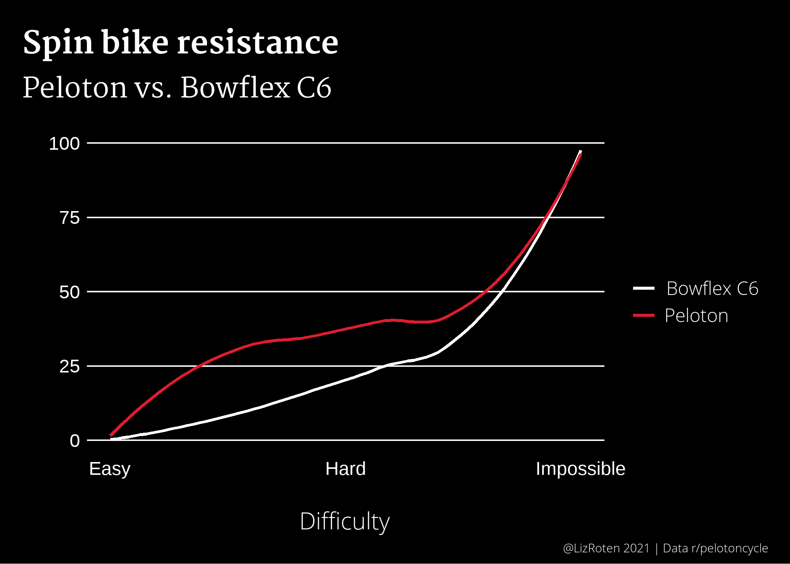

Converting Peloton resistance to Bowflex C6 resistance
Visualizing spin bike difficulty

Around the holidays, my partner and I decided to bring a stationary exercise bike into our home. After many pros and cons lists, we opted for the Bowflex C6. I decided to try out this whole Peloton thing, and quickly found that the resistance adjustments are not equivalent between the Peloton bike and the C6. Thankfully, there is a wonderful subreddit just for this model! The folks there directed me to this conversion chart, which then led me to a 3D-printed plate to keep on my handlebars.
As I kept going along in my classes, all I could think was “What does this look like on a plot? What is the distribution?” Here is the result.
Load packages
## load packages
library(dplyr)
library(tidyr)
library(purrr)
library(ggplot2)
## theme and Peloton(c) red
source("theme.R")
pelo_red <- "#df1c2f"
Create tibble
Create data table.
conv_table <- tibble(C6 = c(0, 5, 9, 17, 25, 33, 49, 100),
Peloton = c(0, 25, 30, 35, 40, 45, 50, 100),
Difficulty = seq(from = 0, to = 10, length.out = 8 ))
conv_table_long <- conv_table %>%
gather(C6, Peloton, key = "Bike", value = "Resistance")
Plot
Make the plot.
plot <- ggplot(data = conv_table_long) +
geom_smooth(mapping = aes(x = Difficulty,
y = Resistance,
color = Bike),
se = FALSE) +
scale_color_manual(values = c("white",
pelo_red),
labels = c("Bowflex C6",
"Peloton")) +
scale_x_continuous(n.breaks = 3,
labels = c("Easy",
"Hard",
"Impossible")) +
labs(title = "Spin bike resistance",
subtitle = "Peloton vs. Bowflex C6",
x = "Difficulty",
caption = "@LizRoten 2021 | Data r/pelotoncycle") +
my_theme
Display plot
plot

Update!
I was scrolling through aforementioned r/SchwinnIC4_BowflexC6 and found a post by another data person!
The conversion formula u/raintower579 found is below
$$ y = 0.0171x^2 - 0.64x + 9.1429 $$
where x is the Peloton resistance and y is the C6 resistance.
pelo_conversion <- function(x){
(0.0171*x^2) - (0.64*x) + 9.1429
}
To estimate the equivalence beyond 50, we can create a new tibble and apply the function to a sequence of Peloton resistance settings. Instructors don’t tend to call out any value below 20, so we can start there.
tibble(peloton_resistance = seq(20,100,5)) %>% # create Peloton resistance sequence, 20-100 by 5s
mutate(c6_resistance = round(pelo_conversion(peloton_resistance), 1))
#> # A tibble: 17 x 2
#> peloton_resistance c6_resistance
#> <dbl> <dbl>
#> 1 20 3.2
#> 2 25 3.8
#> 3 30 5.3
#> 4 35 7.7
#> 5 40 10.9
#> 6 45 15
#> 7 50 19.9
#> 8 55 25.7
#> 9 60 32.3
#> 10 65 39.8
#> 11 70 48.1
#> 12 75 57.3
#> 13 80 67.4
#> 14 85 78.3
#> 15 90 90.1
#> 16 95 103.
#> 17 100 116.
By this table, I’ve been making my classes much harder than necessary.
We can plot this function, as shown below.
ggplot(data = conv_table,
aes(x = Peloton,
y = C6)) +
geom_function(
fun = pelo_conversion,
color = "white") +
stat_function(
fun = pelo_conversion,
geom = "point",
color = pelo_red,
size = 2,
n = 17) +
scale_x_continuous(limits = c(20, 100)) +
scale_y_continuous(limits = c(0, 100)) +
labs(title = "Peloton to Bowflex C6 resistance conversion",
x = "Peloton",
y = "Bowflex C6",
caption = "@LizRoten 2021 | Data r/pelotoncycle | Model u/raintower579") +
my_theme2

The big, flashing caveat here is that every bike is calibrated just slightly differently, so this might not be correct for the machine in my bedroom.